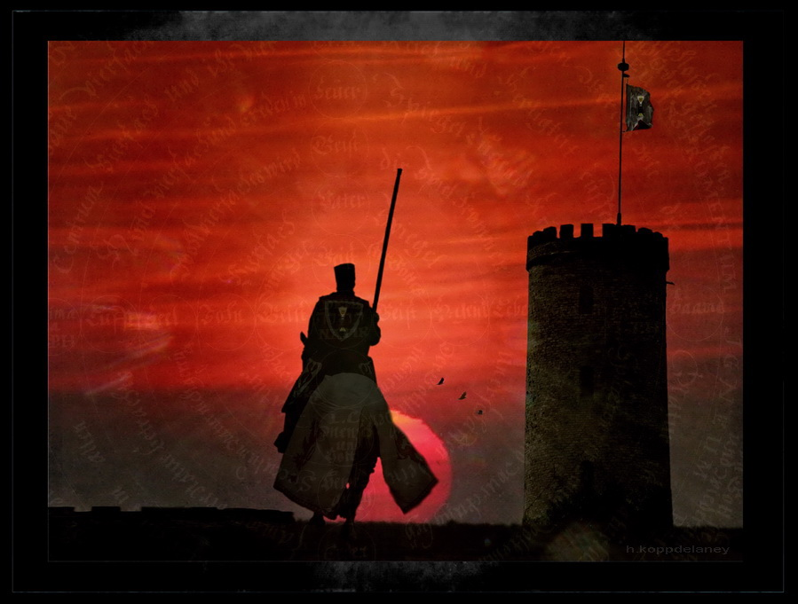

Filnguard was a land where imagination and drive was rewarded by the very land itelf. If you had a goal, you were to chase it. Some would call it magic, some would say destiny, but at the end of the day, every living being was inked to the soil. The Goddess of life took the form of the land, and would give you what you sought the most, but not without difficulty. A dark and mysterious force underneath the land, dark magic, would interfere and stave you off your path. This was meant to preserve a balance, not everyone was strong enough to pursue their dreams, not everyone was willing to sacrifice. Despite the intricate connection between life and land, the balance was easily broken when darkness was involved, and that is why an elite order of warriors were formed to protect the people from bleeding patches of dark, the Crimson Order. These warriors hunted darkness at it's roots wherever it flard up, may that be the tundras of the North, the marshes of the South, sometimes even the Eastern deserts, al the way to the unexplored jungle of the West. Many of these warriors experienced great pain early in life to darkness, but none as much as Old Canan, the only man the dark can't see coming.
